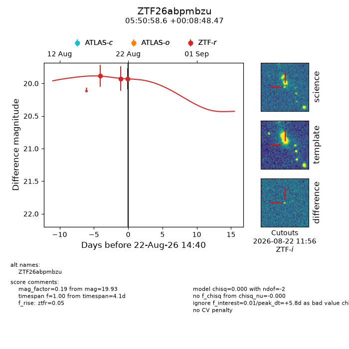
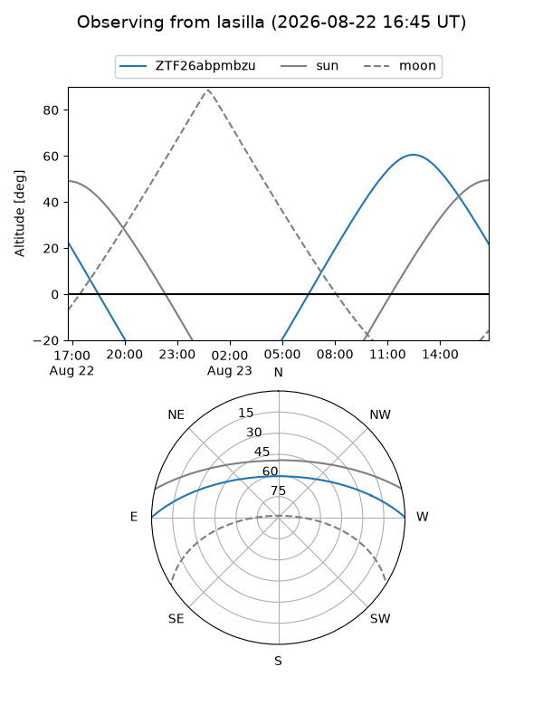
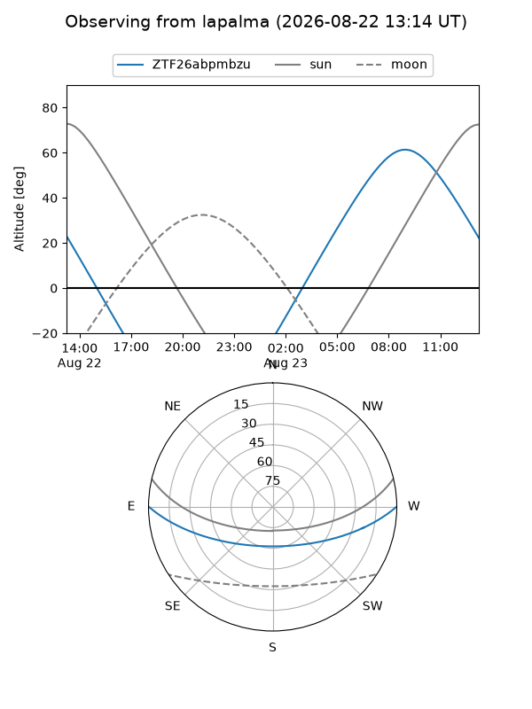
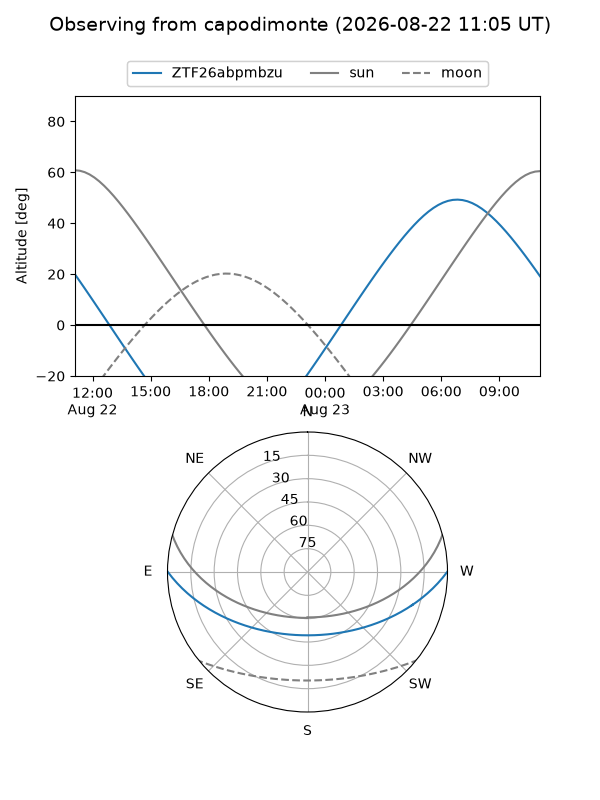
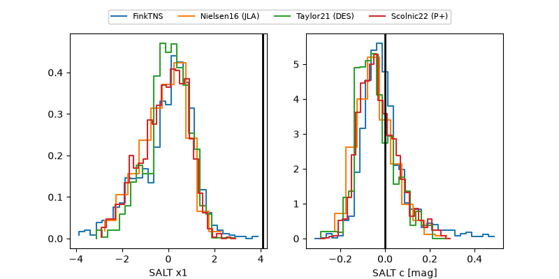

ZTF26abpmbzu
Target ZTF26abpmbzu at 2026-08-22 14:43
Aliases and brokers:
FINK-ZTF: ztf.fink-portal.org/ZTF26abpmbzu
Lasair-ZTF: lasair-ztf.lsst.ac.uk/objects/ZTF26abpmbzu
ALeRCE-ZTF: alerce.online/object/ZTF26abpmbzu
Direct TNS query: direct search
alt names
ZTF26abpmbzu (ztf,fink_ztf)
Coordinates:
equatorial (ra, dec) = 87.7440,+0.14680
equatorial (HMS+DMS) = 05:50:58.56,+00:08:48.47
galactic (l, b) = (205.7771,-13.35060)
Flags:
peak dt: +5.8
Photometry:
last ztfr=19.93
3 ztfr detections
Lightcurve

Visibility



Additional plots
